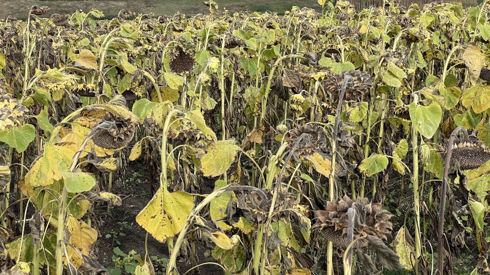
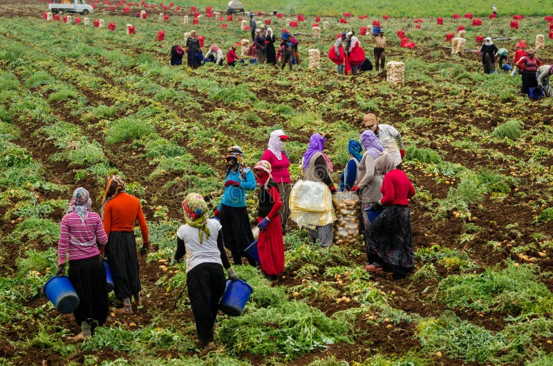
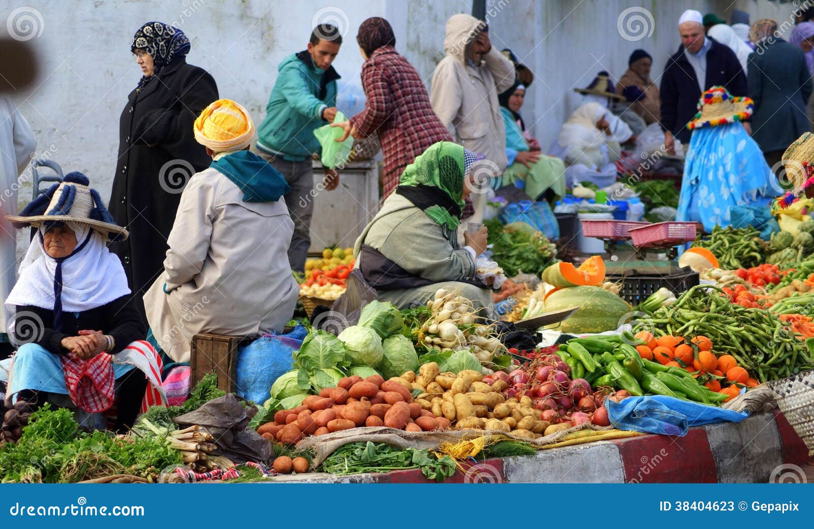
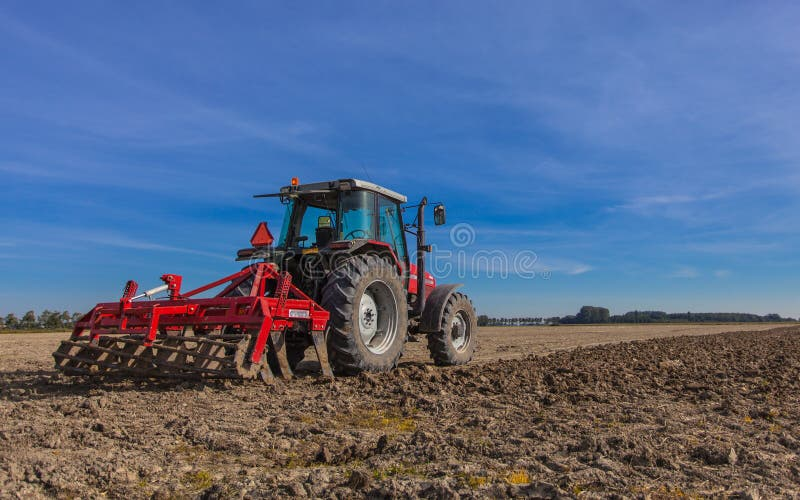
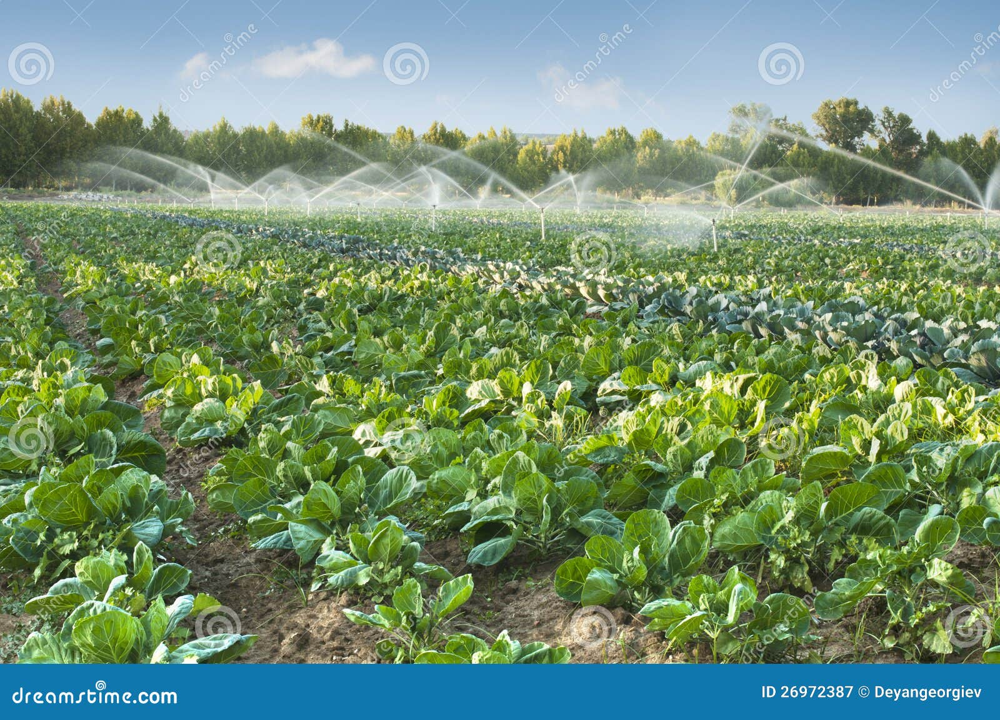
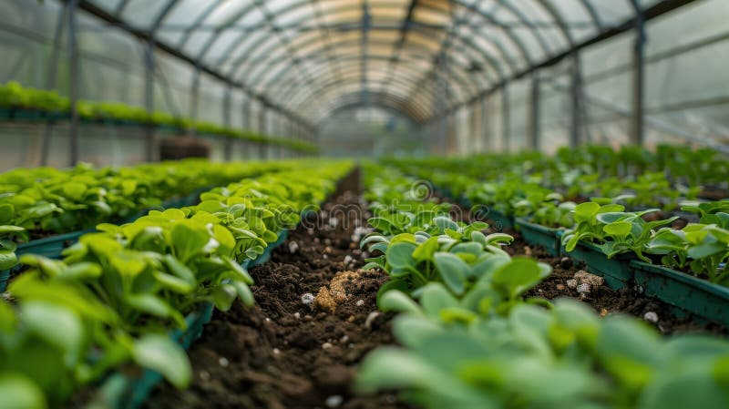
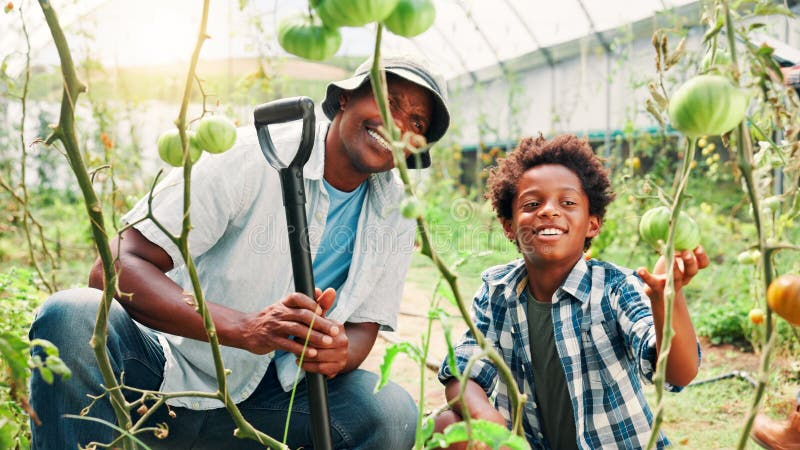

Beautiful crop fields ready for harvest

Farmers harvesting their crops

Fresh produce at the farmers market

Tractor plowing the fertile land

Efficient irrigation system in action

Organic farming practices for sustainability

Modern greenhouse for year-round crops